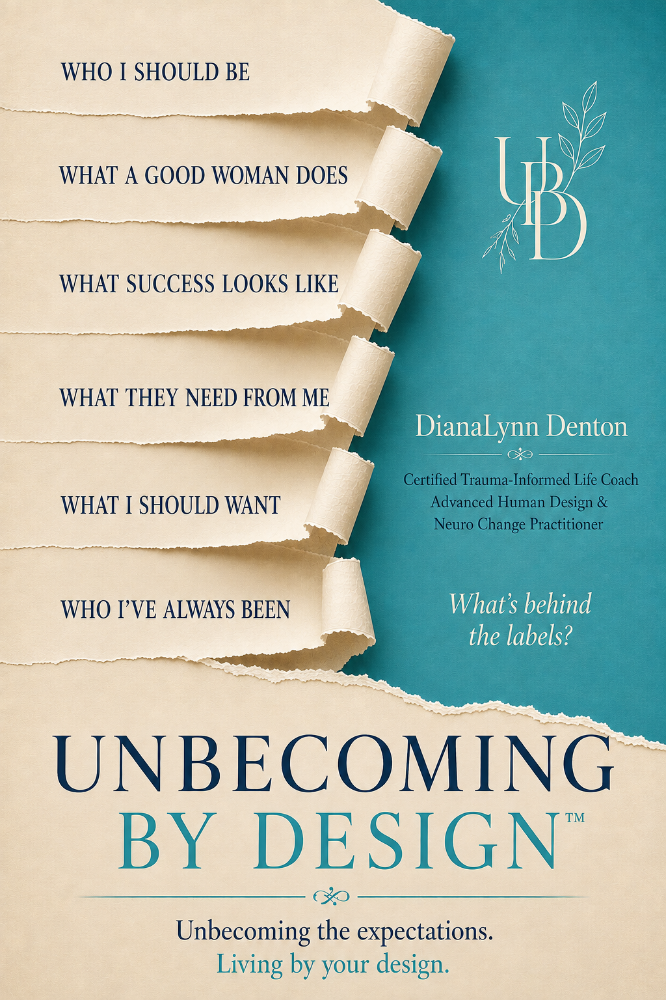

Unbecoming By Design

Unbecoming By Design
Sometimes stress isn't about having too much to do. It's about spending too much of your life being who everyone needs you to be.
When you have spent years meeting expectations, carrying responsibilities, and becoming the person others can count on, it can be difficult to tell where those expectations end and you begin.
Unbecoming By Design is not about becoming a better version of yourself. It is about understanding how you became who you are and deciding what still fits.
Drawing from Human Design, Neuro-Linguistic Programming (NLP), and IFS-informed concepts, Unbecoming By Design helps you recognize what has shaped your choices, question what you have continued to carry, and decide what deserves to come with you.
Through reflection, practical examples, and the five-step Unbecoming Method: Recognize, Separate, Question, Choose, and Practice, you'll learn to approach change with greater awareness and make choices that more closely reflect who you are today.
Future titles from Unbecoming By Design™ will appear here as they're announced.